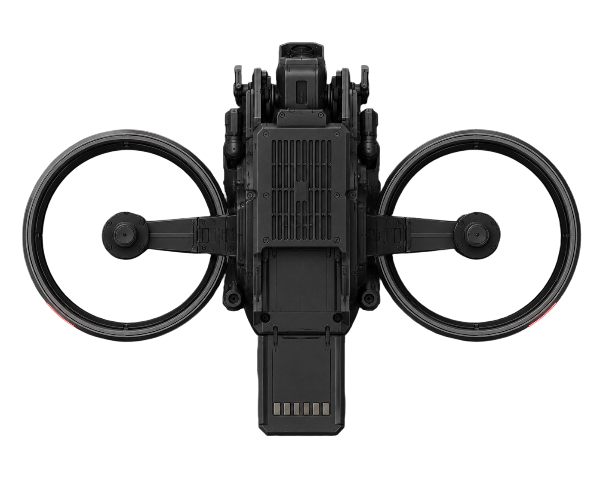

Urban Halo
A self-guided drone system designed to enhance traffic surveillance and emergency response in urban environments.

In most cities today, traffic accidents create a chain reaction of problems far beyond the collision itself. Congestion spreads through connected intersections, emergency vehicles become trapped inside traffic, witnesses often provide incomplete information, and police officers frequently arrive with limited understanding of the actual severity of the scene.
Urban Halo proposes an AI-powered autonomous traffic drone system embedded directly into city infrastructure. Rather than functioning as a traditional surveillance drone or manually controlled police tool, the system is designed as a distributed first-response network capable of reacting to traffic accidents within seconds after detection.
Drones are stored inside modified traffic lights or urban utility structures positioned across the city. Every traffic-light station functions as a localized launch node connected to a citywide AI coordination network. When an accident is detected, the nearest available drone automatically launches and navigates toward the incident location.
The drone collects visual, spatial, and environmental information in real time. Computer vision models identify vehicles, pedestrians, road obstacles, damaged structures, smoke, fire, traffic density, and lane blockage conditions. Structured observations then enter a severity-scoring and LLM-based reasoning layer to support emergency dispatch and responder coordination.
The project reframes emergency response from reactive arrival to predictive situational awareness, using autonomous infrastructure to bridge the information gap between the accident scene and human responders.